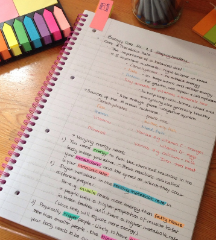
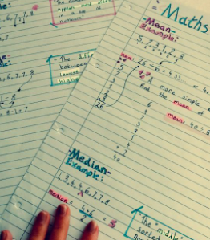

1.😊Get Organized

Have a homework planner at all times. Sumbmitting homework, projects, tests and assignments as soon as they are assigned will make sure you do not forget about them. |
2.😊Pay Attention In Class
It's important to concentrate and avoid distractions when the teacher is speaking. Practice active listening by concentrating on what's being said and taking notes in your own words. This will help make sure you hear (and understand) what is being taught in class. |
3.😊Clear Of Distractions
Distractions are everywhere—from cell phones to social media to friends. Be aware of what distracts you in class and know how to steer clear of these distractions. Avoid sitting next to friends if you know they will distract you. Turning off your cell phone will also help make sure you are paying attention to your teacher. |
4.😊Take Complete Notes
Writing clear and complete notes in class will help you process the information you are learning. These notes will also become study notes that can be reviewed before a test. Talk to friends or the teacher if you have missed a class to ensure your notes are complete. |
5.😊Ask Questions If You Do Not Understand
Raise your hand and ask questions if you don't understand something. If you don't feel comfortable asking in front of everyone, write yourself a reminder to talk to the teacher after class. |
6.😊Make A Study Plan
When making a study schedule, look at your planner and think about what needs to be accomplished. Think about the types of questions that will be on the test and the topics that will be covered so you know what you should focus on. Set specific goals for each study session, like how many topics you will cover by the end of the session. |
7.😊Review Notes From Class Every Evening
After school, review and expand on the notes from class. Reviewing notes helps move material learned from short-term memory into long-term memory, which will help next time you have a big test. |
8.😊Talk To Lectures/Teachers
Teachers/ Lectures are there to help you do your best. Talk to your teacher and ask for clarification or extra help if you need it before your test. Taking the initiative to ask for help goes a long way with teachers! |
9.😊Design A Study Area

The best study spot is one that is quiet, well-lit, and in a low-traffic area. Make sure there is a clear workspace to study and write on. Everyone's needs are different, so it is important you find a spot that works for you. |
10.😊Study In Short Bursts
For every 30 minutes you study, take a short 10-15 minute break to recharge. Short study sessions are more effective and help you make the most of your study time |
11.😊Simplify Study Notes
Make studying less overwhelming by condensing notes from class. Underline or highlight key words. Create visual aids like charts, story webs, mind maps, or outlines to organize and simplify information and help you remember better. |
12.😊Study With A Group
Working with classmates encourages an interactive environment to keep you engaged. This gives you a chance to test your knowledge with others, quiz each other on the content, and help boost each other's confidence. |